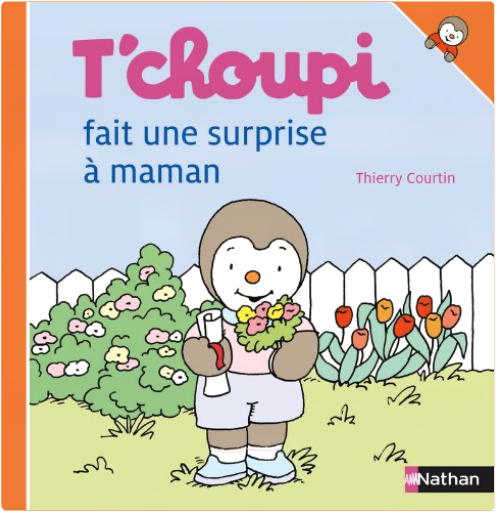

t'choupi, tome 10 : fête noëlthierry courtin  T'choupi ne tient pas en place, il est tout impatient, c'est Noël. Il pose des tas de questions : est-ce que le Père Noël va avoir froid et comment va-t-il venir ? Il faut décorer le sapin et après aller se coucher pour trouver demain les cadeaux du Père Noël... Une collection qui raconte les aventures de T'choupi, le petit pingouin curieux, ouvert, enthousiaste et plein d'énergie. Chaque titre aborde une situation de la vie quotidienne de T'choupi, ses petits bonheurs, ses petits malheurs. Les enfants pourront s'identifier aux faits et gestes de leur héros, relatés avec tendresse et humour. Des petits livres résistants et adaptés aux petites mains, coins arrondis et pages pelliculées. Couverture rigide. Dimensions : 16 x 16,5 x 0,8 cm. |  Tchoupi, l\ ami des petits T\ choupi découvre la présence d\ une petite soeur.... Tchoupi a une petite soeur est le numéro 16 de cette collection. ...  t'choupi, tome 21 : fait une surprise à mamanthierry courtin Tchoupi, l\ ami des petits T\ choupi a décidé d\ être discret, pour préparer de belles surprises à sa maman ! Tchoupi fait une cabane est le numéro 21 de cett... |

Julien
Collection Total:
1 937 Items
1 937 Items
Last Updated:
Mar 19, 2022
Mar 19, 2022
 Made with Delicious Library
Made with Delicious Library